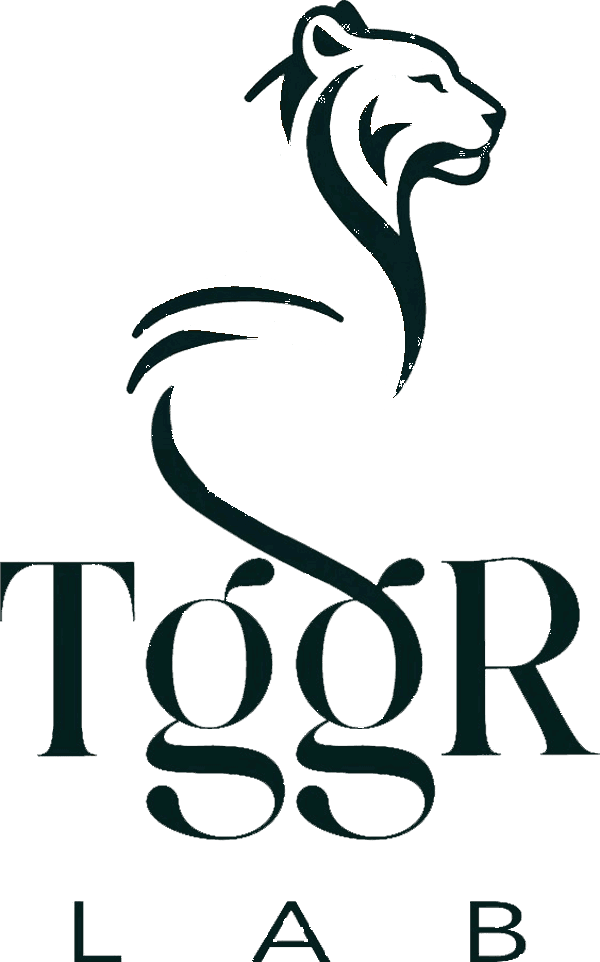
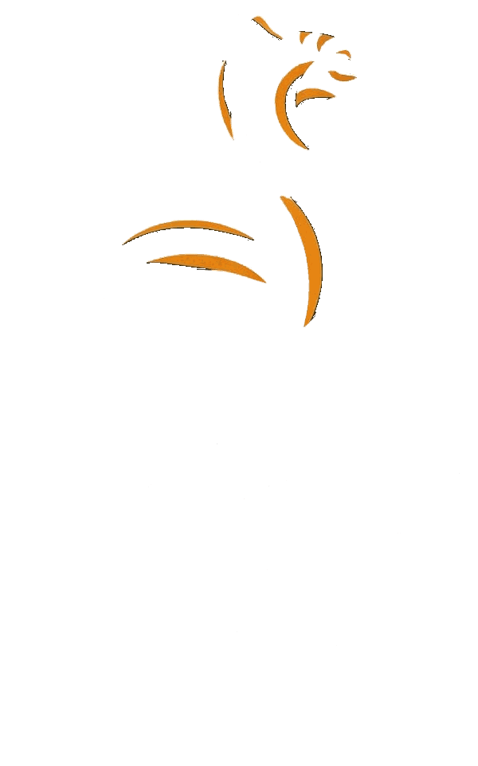
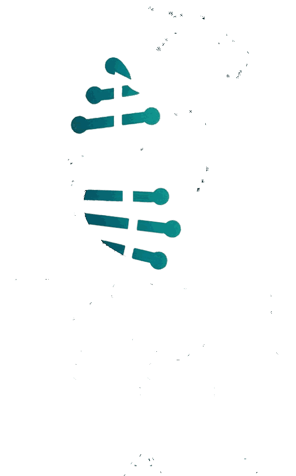
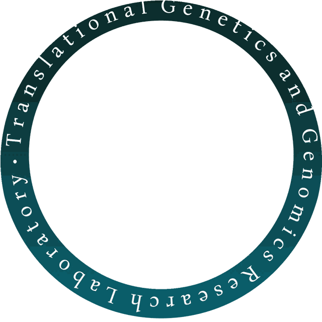

Nine ways the TGGR logo could move. The lockup is the supplied file in its supplied position; only the ring, or one colour layer, moves.
The text ring, one revolution every 80 seconds, the lockup still. Pauses under the pointer.




The lab on the outer ring, the institute on the inner, turning against each other. The lockup a little smaller to make room.
The teal base pairs brighten in a wave down the helix. Glows in dark mode. The ring turns underneath.
On page load the lockup appears in three passes, ink, then stripes, then rungs, then the ring fades in and starts to turn. Once, then still.
The three layers shift at different depths as the pointer moves, the ring leans with it, and the lockup breathes. Move the mouse over it.
Hovering pulls the rungs out of the helix one way and the stripes the other, and the ink fades back. It closes again when you leave.
The ring is driven by scrolling. It moves only when the reader does, and stops when they stop.
The solid teal band from the supplied logo, turning around the still lockup. The logo as it is, with one moving part.

Option 8 with option 3 inside it. The band turns while the base pairs light up in sequence. Both move, neither fast.
Geometry: the lockup is 44% of the ring's diameter and sits 1.5% above its centre, measured from the supplied ring file; the band version is centred, as in its file. Dark mode: the ink layer is swapped for a cream copy, so nothing needs a white circle behind it. Combinations: 8 is the logo as supplied with one moving part. 4 then 1 suits a page header. 3 and 9 are for dark pages. 5 and 6 are for a hero. 7 suits a small logo in a sticky rail. All of it stops under a reduced-motion setting.